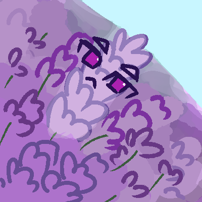
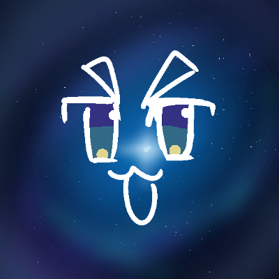
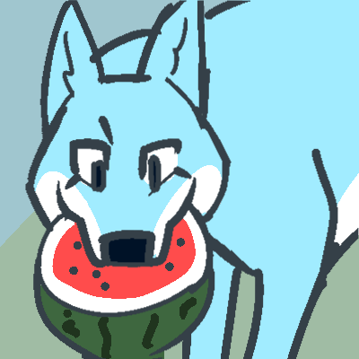
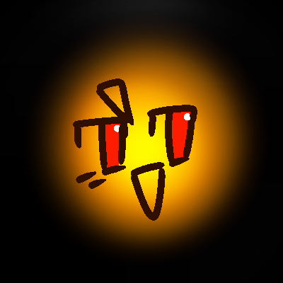
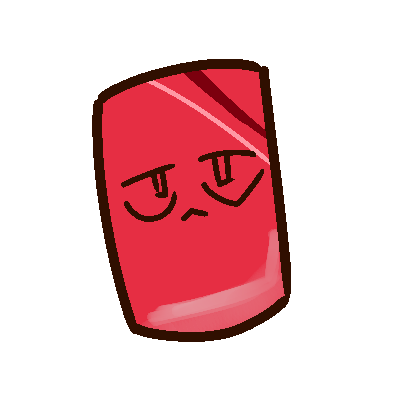
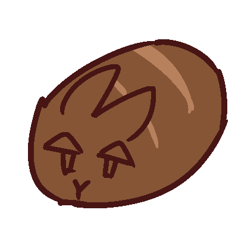
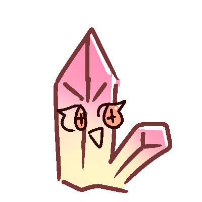

The yearly event where Kiwi messes around her site to get a chuckle out of you. This time, taking my OC names too literally. Unfortunately, Claire, Ruth and Mira don't have a new pic, as their names aren't based on objects or creatures.
(1 Apr 2025)
Lavender

It took me an ridiculous amount of time to draw a field of lavenders, I suck at scenery drawing
Cosmos

OooOoo she's in space
Grey
I only just realised I put the wrong picture during April Fools, where it was just a grey image without the face. Maybe that is part of the joke.
Wolf

Wolves tend to look cool and majestic, which wouldn't be fair to this event. So I used the silliest reference I could find: Wolf eating a watermelon
Solar

She wanted to shine, so now she's the sun
Jaspers

Leaked image of Steven Universe of whatever
Bun

It's funny how their page is mostly hidden, so nobody might have noticed their new profile pic.
Crystal

Another gem stone profile pic! It's also quite sad since both Bun and Crystal finally got a profile pic this April Fools, but I revoked that after it ended.